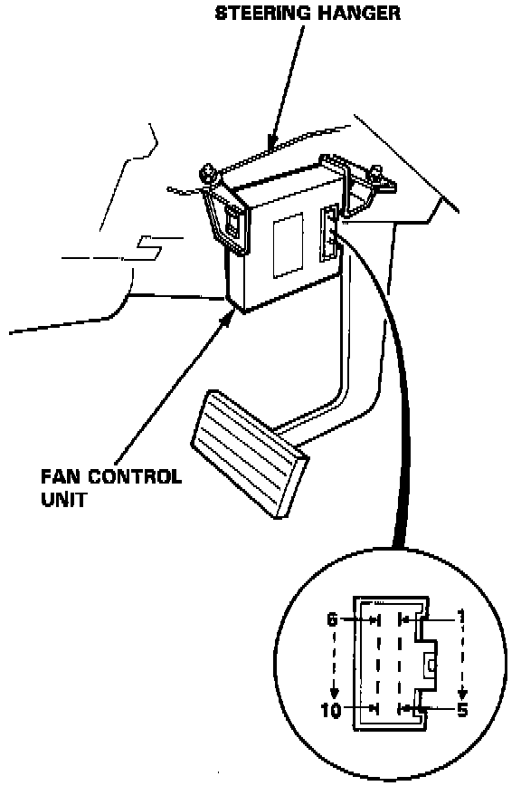
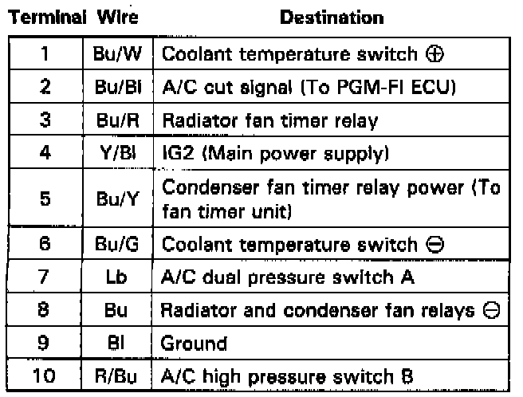

Operation CHARM
: Car repair manuals for everyone.
Home
>>
Acura
>>
1986
>>
Legend V6-2494cc 2.5L SOHC FI
>>
Repair and Diagnosis
>>
Relays and Modules
>>
Relays and Modules - HVAC
>>
Control Module HVAC
>>
Testing and Inspection
>>
Fan Control Unit
Fan Control Unit


Fan Control Unit Terminals
Inputs / Outputs